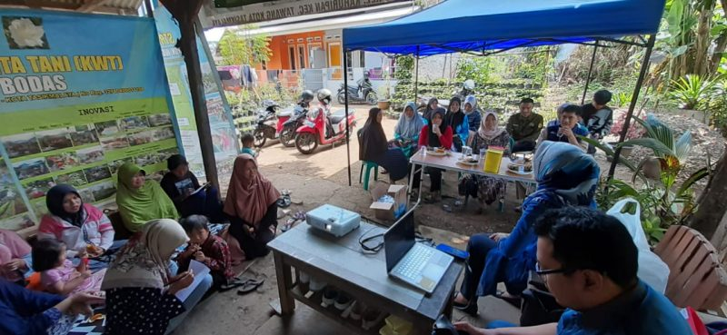

Program Pengabdian Masyarakat Pemberdayaan Berbasis Masyarakat
Untuk memenuhi gizi masyarakat bisa dimulai dari pemenuhan gizi keluarga. Pemenuhan gizi keluarga dapat dimulai dari halaman rumah. Di perkotaan halaman rumah sangat terbatas karena lahan yang sempit. Pemanfaatan lahan sempit di perkotaan untuk budidaya peternakan dan pertanian dikenal dengan konsep “Integrated Backyard Farming”. Dengan konsep ini masyarakat dapat melakukan budidaya untuk mendapatkan sumber protein hewani dan sayuran di halaman rumah. Selain itu limbah yang dihasilkan dapat kembali ke lahan untuk menjadi kompos dan pakan bagi ternak yang dipelihara. Pada akhirnya masyarakat dapat menjalani kehidupan yang zero waste yang berkelanjutan dan meningkatkan kesejahteraan keluarga dari halaman rumah.
Pelaksanaan Pelatihan
KWT Mawar Bodas merupakan percontohan kelompok pertanian yang menjalankan budidaya pertanian dan peternakan secara bersama-sama, namun pelaksanaannya belum optimal. Oleh karena itu melalui kegiatan pengabdian masyarakat ini ditawarkan konsep Integrated Backyard Farming. Dengan konsep ini masyarakat sasaran dapat melakukan budidaya untuk mendapatkan sumber protein hewani dan sayuran di halaman rumah. Selain itu limbah yang dihasilkan dapat kembali ke lahan untuk menjadi kompos dan pakan bagi ternak yang dipelihara. KWT Mawar Bodas memiliki potensi untuk berkembang dan perlu pendampingan untuk mencapai peningkatan produktifitasnya. Pengabdian kepada Masyarakat ini bertujuan untuk mengedukasi dan mendampingi KWT dalam peningkatan produktifitas sehingga tercapai kesejahteraan anggota.